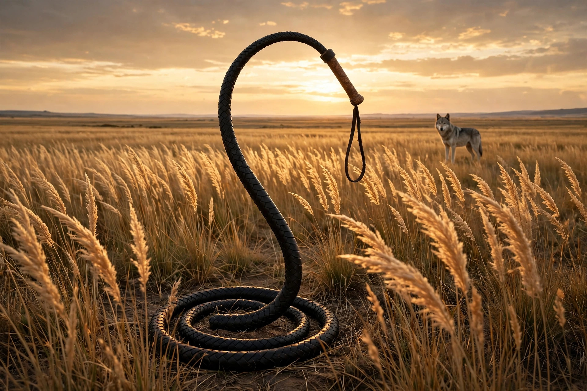

Nagaika — a short, thick whip of braided rawhide, round in cross-section, with a short wooden handle and a wrist loop. Standard kit of the Cossack horseman, borrowed wholesale from the Nogai Tatars of the steppe: built to urge a horse, heavy enough at the tip to fight off a wolf, and eventually infamous as the Tsar's crowd-control baton.
Stress the middle syllable — nah-GY-kah. Seven letters, three of them A, and the whole word looks braided itself, all crossings and curves. It also answers to kamcha, from the Turkic kamci, plain "whip" — but nagaika is the better name, because it has a people inside it.
From Russian nagayka, from the Nogai, the Turkic nomads of the steppe north of the Caucasus. Its first form was nogaika — literally "the Nogai's."
A borrowed word with the borrow still visible — tap each part:
A word with a false snake in its first four letters and a true people in its first three.
One tool, three careers — hold them together:
Rawhide strips braided tight around a core, tapering to a knot or a cracker. Its everyday job for centuries was the simplest one on the steppe: a flick, and the horse moves. It rode looped at the wrist or tucked into a boot-top, always within reach.
Some nagaikas were worked with metal in the tip — weighted to strike, not just sting. Vladimir Dahl's great dictionary of Russian, in the 1860s, records that fighting version under its own name: volchoboy (волкобой) — "wolf-killer."
Regulation issue for Cossack troops in the Imperial army, and a badge of rank for senior Cossacks. Then, in 1905 and after, mounted Cossacks turned it on crowds — and the whip became a byword for Tsarist repression, its third career, and the one that stained the name.
Nogai horsemen ride the grass sea north of the Caucasus with short braided whips. Cossacks settling the same frontier adopt the tool wholesale — braid, handle, wrist loop, and word. Technologies on the steppe belonged to whoever could stay on a horse; this one kept its makers' name anyway.
Vladimir Dahl's Explanatory Dictionary records the nagaika in detail — and its weighted, wolf-fighting form under a separate name, volchoboy. A thing gets a dictionary entry of its own, plus a variant with its own entry, when it is everywhere. By then the whip was standard Cossack issue across the empire.
Revolution year. Cossack units disperse demonstrations with nagaikas, and the whip passes into political cartoons, protest songs, and foreign headlines as shorthand for the regime's fist. A horse tool becomes the most hated silhouette in Russia — recognizable at a hundred paces, in a single curved line.
The nagaika survives as folk craft and ceremonial dress for Cossack revival groups, sold in markets from the Don to the Caucasus — and it still starts an argument whenever it appears at a modern protest in a patrolman's hand. Few tools carry their whole history this visibly: horse, wolf, crowd.
1. A nagaika is…
2. The name nagaika comes from…
3. A weighted, metal-tipped nagaika for fighting wolves was called…
4. Its everyday job, first and longest, was…
You mine Blossom for prompt seeds — here's this one, ready to plant:

Tonight's render — spot the quiet impossibility.